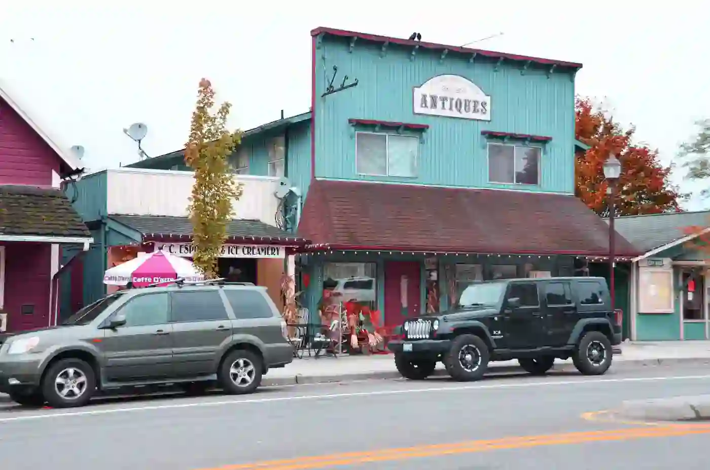
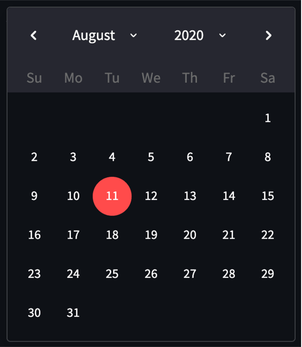

Duvall Chamber of Commerce
Home
Discover
Directory
Join
dark mode

Antique Shop of Main Street
Duvall Church
City Hall
Duvall Books
Antique Shop of Main Street
McCormick Park at the River
Visit Message
